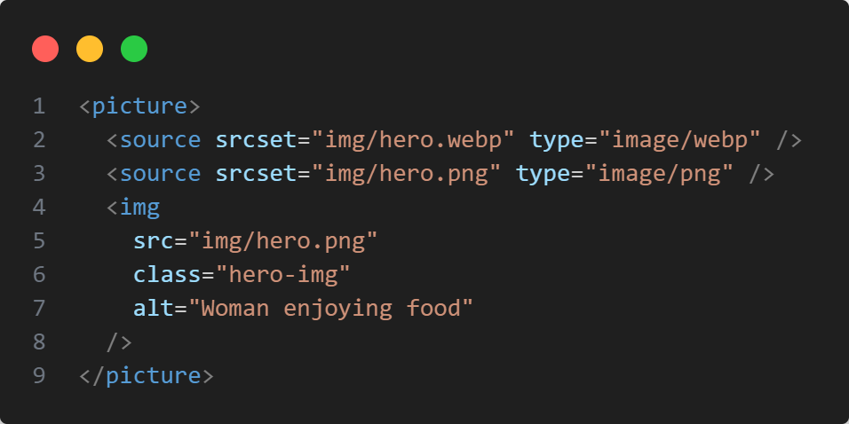

Omnifood: AI-Powered Meal Delivery Service

Project background
The problem
My initial motivation for this project stemmed from a common challenge: busy individuals often struggle to maintain a healthy and balanced diet due due to time constraints. I wanted to explore how a digital solution could address this, specifically by offering an AI-generated meal plan service with convenient doorstep delivery.
My role
I took on the role of the sole developer and designer for this project, handling everything from conceptualizing the user interface to writing the core HTML, CSS, and JavaScript, and ensuring its responsiveness and performance.
Why I built this
Learning goals
- Mastering CSS Grid and Flexbox: To create complex, modern layouts efficiently and responsively.
- Implementing mobile-first responsive design: Ensuring the site looked and functioned flawlessly across a vast range of screen sizes, from mobile (320px) to larger desktops.
- Exploring performance optimizations: Aiming for a high Lighthouse performance score by applying best practices.
Personal motivation
Exploring performance optimizations: Aiming for a high Lighthouse performance score by applying best practices.
Deep dive: How I built it
1. Architecture & tech stack
Frontend
-
HTML5 Utilized semantic tags (e.g.,
<header>,<section>,<main>,<figure>,<footer>) to provide meaningful structure, enhancing both readability and accessibility. -
CSS3 Employed a systematic approach with
remunits for typography and spacing, alongside custom properties for consistent branding (e.g., primary color#e67e22). Layouts were primarily built using Flexbox and CSS Grid. My CSS was organized intogeneral.css(global styles, typography, spacing),style.css(component-specific styling), andqueries.css(media queries for responsiveness). - JavaScript: Focused on enhancing user interaction and dynamic elements without relying on heavy frameworks.
Tooling
- Ionicons: Integrated SVG icons for scalable and visually crisp iconography.
2. Key features
(A) Responsive mobile navigation
Challenge: Implementing a smooth, performant mobile menu that toggled cleanly without relying on large libraries like jQuery.
Solution: I leveraged a simple class toggle in JavaScript that, combined with CSS transitions, provided a fluid slide-out effect.
This approach allowed for complete control over the animation and ensured minimal performance overhead.
(B) Performance optimizations
I focused on reducing page load times and improving perceived performance:
-
WebP images: I implemented the
<picture>element to serve modern.webpimage formats for the hero section, with a.pngfallback for wider browser compatibility. This significantly reduced image file sizes. -
Deferred JavaScript loading: All JavaScript files were loaded with the
deferattribute, ensuring they executed only after the HTML was fully parsed, preventing render-blocking. -
Font loading strategy: Used
display=swapfor Google Fonts to ensure text became visible immediately, even if the custom font took time to load.
(C) Sticky navigation
Challenge: Creating a sticky header that smoothly appeared without causing layout shifts, common with position: fixed and simple scroll events.
Solution: I utilized the powerful IntersectionObserver API to precisely detect when the hero section moved out of view, triggering the sticky class addition. This is a much more performant solution than traditional scroll event listeners.
Challenges & solutions
Challenge: Safari's flex-gap bug
Solution: Implemented a JavaScript checkFlexGap() polyfill to detect lack of support and add a no-flexbox-gap class, activating CSS fallbacks.
Lesson learned: Always test on multiple browsers, especially Safari, early in development.
Challenge: Smooth scrolling
Solution: Used scrollIntoView({ behavior: "smooth" }) and included a smoothscroll-polyfill for broader browser support.
Lesson learned: Native browser features are great, but polyfills ensure wider compatibility.
Accessibility (A11y)
I prioritized accessibility throughout the build:
-
Semantic HTML: Extensive use of HTML5 semantic elements (
<nav>,<section>, etc.) provides clear document structure for screen readers. -
Descriptive
altattributes: All images include meaningfulalttext to describe their content for users with visual impairments. -
Responsive design: The fluid layout with
remunits ensures content scales proportionally, benefiting users who adjust browser zoom levels. - Keyboard navigation: All interactive elements, including the mobile navigation toggle, are designed to be focusable and navigable via keyboard.
-
Color contrast: Text and background color combinations were chosen to meet WCAG 2.1 AA contrast ratios (e.g.,
#e67e22on white for calls-to-action).
Results & metrics
While specific live Lighthouse scores depend on deployment, my development process aimed for:
- Performance: Targeting >90 (achieved through image optimization, deferred JS, font loading strategy).
-
Accessibility: Targeting 100 (achieved through semantic HTML,
alttags, keyboard navigation considerations, contrast). - SEO: Targeting 100 (achieved through semantic HTML, descriptive meta tags).
What I'd do differently
Reflecting on the project, a few areas I would explore for future enhancements include:
-
Dark Mode: Implementing
prefers-color-schememedia queries to offer a dark mode option. - Micro-interactions: Adding subtle animations (e.g., animating meal cards on hover) using a library like GSAP for a more polished feel.
- React refactor: Componentizing reusable sections (like "Pricing" or "Testimonials") into a modern JavaScript framework like React for better scalability and state management, if the project were to grow larger.